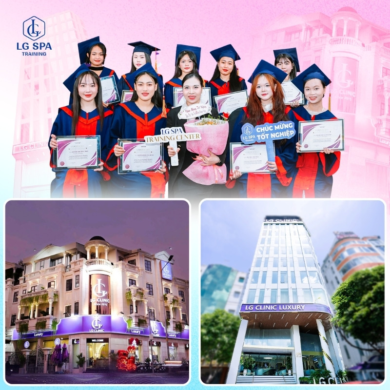
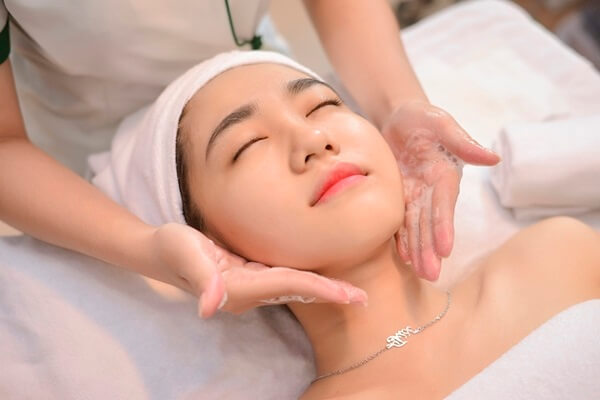

Top 3 Trung Tâm Đào Tạo Spa Uy Tín Nhất Tại TP.HCM [Cập nhật 2025]
Bạn đang tìm kiếm địa chỉ học nghề spa uy tín tại Sài Gòn? Hãy cùng khám phá 3 trung tâm đào tạo hàng đầu tại TP.HCM được đông đảo học viên và nhà tuyển dụng đánh giá cao. Bài viết này phân tích chi tiết thế mạnh, phương pháp
đào tạo, tỷ lệ việc làm – giúp bạn chọn được nơi học lý tưởng cho bản thân.
1. LG Spa Training Center – Học Thực Chiến, Cam Kết Đầu Ra
LG Spa Training Center nổi bật với mô hình đào tạo "học thật – làm thật" tại hệ thống LG Clinic chuyên nghiệp. Điểm mạnh của trung tâm bao gồm:
- Cơ sở vật chất hiện đại, phòng thực hành chuẩn Spa chuyên nghiệp.
- Giảng viên là chuyên gia hơn 10 năm kinh nghiệm điều trị da và spa công nghệ cao.
- Giáo trình cập nhật liên tục theo thị trường, bám sát thực tế tuyển dụng.
- Lộ trình đào tạo bài bản, từng học viên được kèm cặp sát sao.
- Học viên được thực hành liên tục, thao tác trên mẫu thật mỗi buổi học.
- Cam kết 100% việc làm tại hệ thống LG Clinic hoặc giới thiệu tới các spa lớn sau tốt nghiệp.

Xem thêm chi tiết về LG Spa Training Center tại: Trang chủ trung tâm.
2. Queen Spa – Đào Tạo Chuyên Sâu Chăm Sóc Da & Massage Trị Liệu
Queen Spa được đánh giá cao nhờ tập trung đào tạo chuyên sâu về các liệu trình làm đẹp, chăm sóc da và massage. Điểm mạnh nổi bật:
- Lớp học quy mô nhỏ, học viên được giảng viên theo sát từng bước thực hành.
- Giáo trình từ cơ bản đến nâng cao, tùy chỉnh theo năng lực từng học viên.
- Chú trọng thực hành, ứng dụng công nghệ làm đẹp mới nhất trong từng tiết học.
- Đội ngũ tư vấn nghề nghiệp sau khóa học, hỗ trợ xây dựng lộ trình phát triển cá nhân.
- Môi trường thân thiện, giúp học viên tự tin thử sức thực tế.
3. New Gem – Đa Năng, Linh Hoạt với Giáo Trình Rộng Đa Lĩnh Vực
New Gem là địa chỉ lý tưởng cho bạn trẻ muốn học rộng về spa, làm đẹp, phun xăm thẩm mỹ. Đặc điểm nổi bật:
- Giáo trình đa dạng: spa, phun xăm, chăm sóc tóc, trang điểm, chăm sóc da mặt.
- Cơ sở vật chất chuẩn quốc tế, các phòng học thực hành riêng biệt cho từng chuyên ngành.
- Giảng viên tâm huyết hỗ trợ, giải đáp thắc mắc mọi lúc khi học viên cần.
- Học viên được thực hành nhiều, nâng cao sự tự tin khi đi làm.
- Tỷ lệ có việc làm sau tốt nghiệp luôn nằm trong top đầu tại TP.HCM.

Cách Chọn Trung Tâm Đào Tạo Spa Uy Tín TP.HCM – Những Tiêu Chí Vàng
- Cơ sở vật chất thực tế, không chỉ quảng cáo.
- Đội ngũ giảng viên giàu kinh nghiệm và tận tâm.
- Lộ trình đào tạo rõ ràng, minh bạch cam kết đầu ra.
- Hỗ trợ việc làm hoặc kiến tập sau tốt nghiệp.
- Học phí, ưu đãi và chính sách hợp lý, minh bạch.
Kết Luận
Mỗi trung tâm đào tạo spa tại TP.HCM đều có lợi thế riêng. LG Spa Training Center nhấn mạnh thực chiến và cam kết đầu ra. Queen Spa mạnh về đào tạo chuyên sâu, môi trường thân thiện. New Gem thích hợp với bạn trẻ muốn phát triển đa kỹ năng. Hãy
cân nhắc mục tiêu nghề nghiệp của bản thân, môi trường học phù hợp để chọn nơi gửi gắm tương lai!